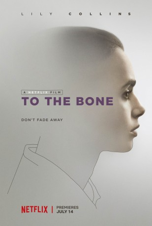

#6580 To the Bone
 
 IMDB-Wertung: 6.9 / 10
IMDB-Wertung: 6.9 / 10  Tomatometer: 70
Tomatometer: 70  Metascore: 64
Metascore: 64 
Die 20-jährige Ellen will nach vier gescheiterten Anläufen in unterschiedlichen Einrichtungen in einem letzten verzweifelten Versuch ihre Magersucht überwinden, indem sie sich in Los Angeles selbst einer Hilfsgruppe anschließt. Dort betreut Dr. William Beckham die größtenteils weiblichen Patienten mit unkonventionellen Methoden und versucht, sie durch das Auf und Ab der manchmal lustigen und manchmal qualvollen Erfahrungen wieder eine Antwort auf die Frage finden zu lassen, ob das Leben wirklich lebenswert ist.
Jahr: 2017
Dauer: 107 Minuten
FSK:
Land: USA Studio: NetflixTonspuren:
Untertitel:
Auflösung: 1080p (1920x1040) Größe: 4853 MB
Genre: Drama, Komödie
Regisseur: Marti Noxon
Drehbuch: Marti Noxon
Soundtrack:
Darsteller:
- Rebekah Kennedy als Penny
 Lily Collins als Ellen
Lily Collins als Ellen- Dana L. Wilson als Margo
- Ziah Colon als Angel
 Joanna Sanchez als Rosa
Joanna Sanchez als Rosa Liana Liberato als Kelly
Liana Liberato als Kelly- Carrie Preston als Susan
- Don O. Knowlton als Jack
- Valerie Palincar als Mother
- Hana Hayes als Chloe
 Keanu Reeves als Dr. Beckham
Keanu Reeves als Dr. Beckham- Kathryn Prescott als Anna
- Lindsey McDowell als Kendra
- Alex Sharp als Luke
 Retta als Lobo
Retta als Lobo- Maya Eshet als Pearl
- Karen Zahler als Grace
 Alanna Ubach als Karen
Alanna Ubach als Karen Leslie Bibb als Megan
Leslie Bibb als Megan Ciara Bravo als Tracey
Ciara Bravo als Tracey Lili Taylor als Judy
Lili Taylor als Judy Brooke Smith als Olive
Brooke Smith als Olive- Leann Lei als Waitress
- Ani Sava als Lidia
- Ronnie Clark als Monty
- Lauren Jenna als Rehab Patient , uncredited
- Yindra Zayas als Anorexic Patient , uncredited
Datei: X:\2017(N-Z)\To the Bone (2017, FSK, 1920x1040).mkv seit 14.07.2017
Festplatte: HD 2017(A-Z)-2018(A-F)
 Es gibt insgesamt 170 Filme in der Gruppe '2017(N-Z)'
Es gibt insgesamt 170 Filme in der Gruppe '2017(N-Z)'